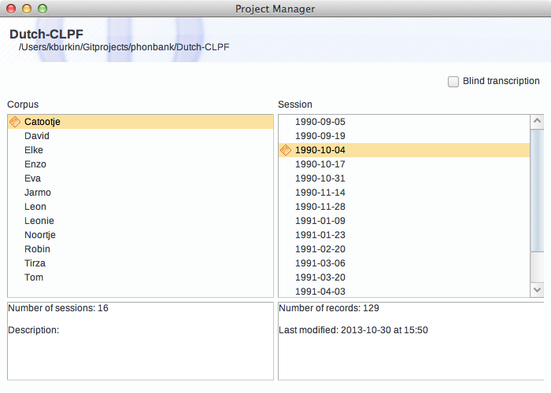

About Sessions
A session in Phon is a transcript of a portion of field data targeting one or more participants in a project.
Phon is designed to facilitate the transcription of media recordings (audio or video) taken of participants in a study. As such, a Phon session usually corresponds to one media recording and the transcript of this recording.
A session is organized into a series of records which correspond to individual utterances.
Sessions can be viewed in the Project Manager window. When a session is selected, the number of records in that session and the date it was last modified are displayed at the bottom of the list of sessions.
